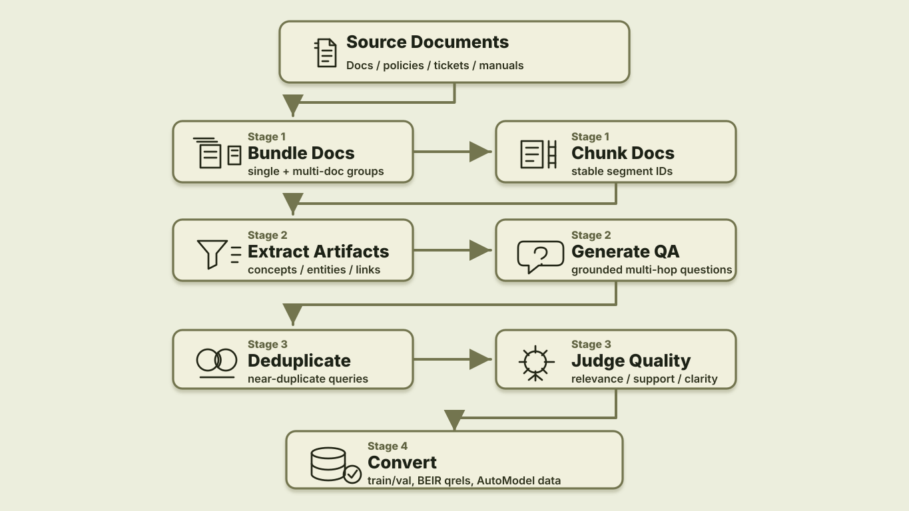

Retriever SDG Plugin: Turn Your Documents Into Retriever Training Data
The data-designer-retrieval-sdg plugin turns source documents into grounded retriever training and BEIR evaluation data: bundle and chunk a corpus, generate multi-hop QA pairs, deduplicate and judge them, then export AutoModel-compatible artifacts.
Why Retriever Data Is the Bottleneck
If you are building a RAG system, you have probably hit this wall: the generator is good, the vector database is fast, the prompt is carefully tuned, and the answer is still wrong because the right passage never made it into context.
That is a retrieval problem. More specifically, it is often a data problem. General-purpose embedding models understand broad semantic similarity, but they do not know the fine-grained distinctions in your product docs, tickets, policies, codebase, manuals, or internal taxonomy. To improve that, you need domain-specific retriever training and evaluation data: realistic queries, positive passages, held-out evals, and enough metadata to know whether the retriever actually found the right evidence.
The hard part is not asking an LLM to write questions about a document. The hard part is keeping every generated question tied to the exact chunk, document, or multi-hop evidence set that a retriever should recover. Many RAG tutorials stop at chunk, embed, retrieve, and prompt. Fine-tuning recipes often begin once labeled query-passage pairs already exist. The gap in between is where developers lose the most time.
The plugin fills that gap. It packages a retrieval SDG toolkit that starts with a directory of documents, generates synthetic query-positive examples with NeMo Data Designer, filters them, and exports them for retriever fine-tuning and BEIR-style evaluation.
This is not just a demo package. The same plugin produced the Retrieval-Synthetic-NVDocs-v1 dataset from NVIDIA public documentation, and it powers the bootstrap SDG stage for both the NeMo embedding fine-tune recipe and reranking fine-tune recipe. It is now available as a standalone Data Designer plugin for generating high-quality, complex, multi-document, multi-hop retrieval data compatible with AutoModel.
This post walks through what the plugin does, why the generated labels matter, and how to make your first small run useful before you scale it up.
From Documents to Retriever Data
The plugin packages a four-stage Data Designer pipeline:

The package contributes two Data Designer extensions:
| Plugin | Type | Why it matters |
|---|---|---|
document-chunker |
seed reader | Turns text files into sentence chunks with stable segment IDs, so each query can point back to the passages that answer it. |
embedding-dedup |
column generator | Removes near-duplicate generated questions before judging and export, so the training data has more variety. |
For local runs, the current package exposes a Python API and a CLI:
| Surface | Use it when |
|---|---|
build_qa_generation_pipeline(...) |
You want to customize the Data Designer config in Python. |
data-designer-retrieval-sdg generate |
You want the packaged end-to-end generation flow. |
data-designer-retrieval-sdg convert |
You want trainer-ready and BEIR-ready files from generated JSON. |
This is still Data Designer: users declare the corpus and generation settings; the engine handles dependency ordering, model calls, async scheduling, previews, and dataset output.
Step 1: Chunk Documents So Labels Survive
For retriever training, chunking is not just preprocessing. The chunk IDs become labels. If a generated query uses chunks 3, 7, and 8, those IDs have to survive generation, filtering, splitting, and export.
The document-chunker seed reader handles that boundary:
from data_designer_retrieval_sdg.seed_source import DocumentChunkerSeedSource
seed_source = DocumentChunkerSeedSource(
path="./docs",
file_pattern="*",
recursive=True,
file_extensions=[".txt", ".md"],
min_text_length=50,
sentences_per_chunk=5,
num_sections=1,
)
Each row includes the original file name, full text, sentence chunks, structured section text, and bundle metadata. The important part is that chunks carry chunk_id values. Those IDs are what later become positive documents in training and qrels.
For questions that span multiple documents, such as "How does the migration guide change the deployment recommendation from the architecture overview?", enable multi-document bundling:
seed_source = DocumentChunkerSeedSource(
path="./docs",
file_extensions=[".txt", ".md"],
multi_doc=True,
bundle_size=2,
bundle_strategy="doc_balanced",
max_docs_per_bundle=3,
)
That gives the model opportunities to generate cross-document questions while still tracking which document each segment came from.
Step 2: Generate Questions That Point Back to Evidence
The pipeline first extracts document artifacts - concepts, relationships, themes, entities, processes, insights, technical terms, and contextual factors. Then it asks the model to generate standalone questions grounded in the chunked context.
As a library, the path is compact:
from data_designer.interface import DataDesigner
from data_designer_retrieval_sdg import (
DocumentChunkerSeedSource,
build_qa_generation_pipeline,
)
seed_source = DocumentChunkerSeedSource(
path="./docs",
file_extensions=[".txt", ".md"],
sentences_per_chunk=5,
)
config_builder = build_qa_generation_pipeline(
seed_source=seed_source,
num_pairs=7,
min_hops=2,
max_hops=4,
min_complexity=4,
similarity_threshold=0.9,
)
results = DataDesigner().create(
config_builder=config_builder,
num_records=200,
dataset_name="retrieval_sdg",
)
A useful generated example looks like this:
{
"question": "How do the deployment requirements change once the system moves from evaluation to production?",
"answer": "Production adds stricter reliability, monitoring, and access-control requirements beyond the evaluation setup.",
"question_complexity": 4,
"query_type": "multi_hop",
"reasoning_type": "procedural",
"segment_ids": [3, 7, 8],
"hop_count": 2,
"hop_contexts": [
{"hop_number": 1, "segment_ids": [3], "summary": "Evaluation setup and baseline requirements."},
{"hop_number": 2, "segment_ids": [7, 8], "summary": "Production deployment constraints."}
]
}
Notice what is different from a generic QA generator:
- The question does not say "according to segment 3."
- The answer is grounded in the source text.
- The
segment_idspreserve the retrieval labels. - Multi-hop questions keep hop-level evidence summaries.
That combination is what makes the data useful for retriever training and not just QA evaluation.
Step 3: Deduplicate and Judge Before Export
Synthetic generators are enthusiastic. Ask for seven questions per document across a large corpus and you will get repeats: the same policy phrased three ways, the same setup requirement asked with slightly different wording, the same "how does X relate to Y" pattern over and over.
This stage has two gates: first remove near-repeated questions, then judge whether the remaining examples are grounded enough to train or evaluate a retriever.
Deduplicate Near-Repeated Questions
The embedding-dedup column removes near duplicates inside each generated list:
from data_designer_retrieval_sdg.config import EmbeddingDedupColumnConfig
config_builder.add_column(
EmbeddingDedupColumnConfig(
name="deduplicated_qa_pairs",
source_column="qa_generation",
items_key="pairs",
text_field="question",
model_alias="embed",
similarity_threshold=0.9,
)
)
The implementation embeds the question text, computes cosine similarity, and greedily drops items above the threshold. It also implements native agenerate(), so it participates directly in Data Designer's async scheduler and uses model.agenerate_text_embeddings(...) instead of becoming a separate side job.
This is a small detail that has a large downstream effect: fewer duplicate queries means cleaner training data and more informative held-out evals.
Judge Grounded Quality
Retriever data quality is easy to overestimate. A generated question might sound fluent but be unsupported. An answer might be correct but require a chunk that was not marked positive. A multi-hop question might only need one hop in practice.
The plugin adds an LLM judge column after deduplication. Each retained QA pair is scored for:
- Relevance
- Factual accuracy
- Context support
- Clarity
- Overall quality
The converter defaults to --quality-threshold 7.0, keeping only pairs whose overall score passes the threshold. It also drops records where the number of judged pairs does not match the number of deduplicated pairs, because silent misalignment is worse than losing a row.
Your first inspection pass should focus on the rejected and borderline examples. If many low-scoring examples share the same failure mode, tune chunk size, document cleanup, model choice, or question complexity before scaling up.
Step 4: Export What Training and Eval Actually Need
The final conversion step rebuilds a deduplicated corpus from the generated chunks, maps segment_ids to positive document IDs, filters by quality, and writes both training and evaluation formats.
For training:
train.json
val.json
corpus/
train.parquet
merlin_metadata.json
For evaluation:
eval_beir/
corpus.jsonl
queries.jsonl
qrels/
test.tsv
This is one of the main reasons the plugin exists. It is easy to generate questions. It is harder to keep training examples, corpus records, and qrels aligned enough that the numbers mean something.
How to Know the First Run Is Working
Before scaling, look at a small sample and ask:
- Would a real user ask this question?
- Can the answer be supported by the listed
segment_ids? - Are multi-hop examples genuinely multi-hop, or would one passage answer them?
- Are rejected examples failing because the source text is messy, the chunks are too small, or the model is too weak?
- Does the BEIR eval contain held-out documents that are meaningfully different from training documents?
Then iterate:
| Symptom | Try |
|---|---|
| Questions are too shallow | Raise --min-complexity, increase --min-hops, or use a stronger generation model. |
| Answers are unsupported | Lower chunk size, clean input documents, or raise the quality threshold. |
| Too many duplicates | Lower --similarity-threshold to make dedup more aggressive. |
| Cross-document eval is weak | Enable --multi-doc and use doc_balanced or interleaved bundling. |
| Not enough examples survive filtering | Add more documents, lower the quality threshold carefully, or improve document formatting. |
The goal of the first run is not volume. The goal is to learn how your corpus behaves.
How Plugins Unlock Custom Retrieval Pipelines
Retrieval SDG needs document-specific seed reading, question deduplication, quality judging, and conversion logic. Packaging those pieces as a plugin gives teams a repeatable path from their own corpus to retriever data while preserving declarative Data Designer configs.
The retrieval SDG plugin includes:
- A seed reader with a stable config schema and tests.
- A reusable embedding-dedup column that can be used outside this pipeline.
- A CLI for generating and converting retrieval data.
- Conversion logic for retriever training and BEIR evaluation.
- Compatibility metadata and installation through the default NVIDIA Data Designer plugin catalog.
Users still write declarative configs:
from data_designer_retrieval_sdg import DocumentChunkerSeedSource
from data_designer_retrieval_sdg import build_qa_generation_pipeline
No registry mutation. No engine internals. No custom chunking pre-process that has to stay manually aligned with supporting evidence.
That is the bigger plugin story: Data Designer provides the orchestration framework, and plugins package domain-specific pieces for custom use cases without bloating the core library.
Try It Yourself
Do not start by generating a million examples. Pick 20-100 representative documents, run a preview, inspect the labels, and only then scale up.
Install the plugin:
data-designer plugin install retrieval-sdg
Run a preview:
data-designer-retrieval-sdg generate \
--input-dir ./my_documents \
--output-dir ./generated_output \
--num-files 50 \
--num-pairs 7 \
--preview
If the preview looks reasonable, run the full job:
data-designer-retrieval-sdg generate \
--input-dir ./my_documents \
--output-dir ./generated_output \
--num-files 50 \
--num-pairs 7
Convert the generated data:
data-designer-retrieval-sdg convert ./generated_output \
--corpus-id my_corpus \
--quality-threshold 7.0
That produces the training and evaluation artifacts you need to keep moving:
generated_output_train_eval/
train.json
val.json
corpus/
train.parquet
merlin_metadata.json
eval_beir/
corpus.jsonl
queries.jsonl
qrels/
test.tsv
Start here:
- data-designer-retrieval-sdg on GitHub
- DataDesignerPlugins catalog
- Domain-specific embedding fine-tuning recipe
- Retrieval-Synthetic-NVDocs-v1 dataset
- NeMo embedding fine-tune recipe
- NeMo reranking fine-tune recipe
- AutoModel
If your RAG system is failing because the retriever does not understand your domain, this is the action step: create the data that lets you measure and improve it. Bring a folder of documents, run the plugin, inspect the labels, and use the output to train and evaluate the retriever you actually need.